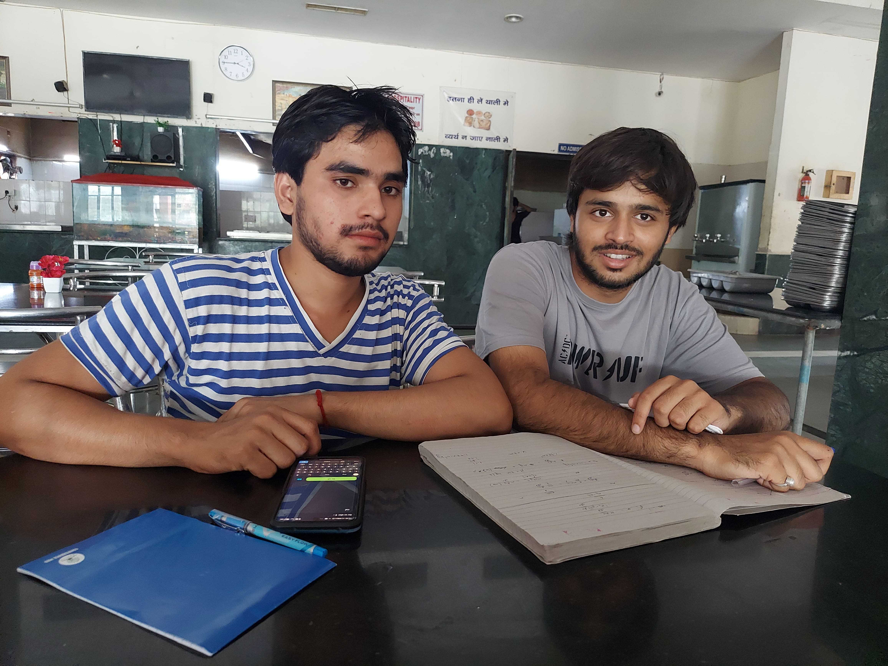
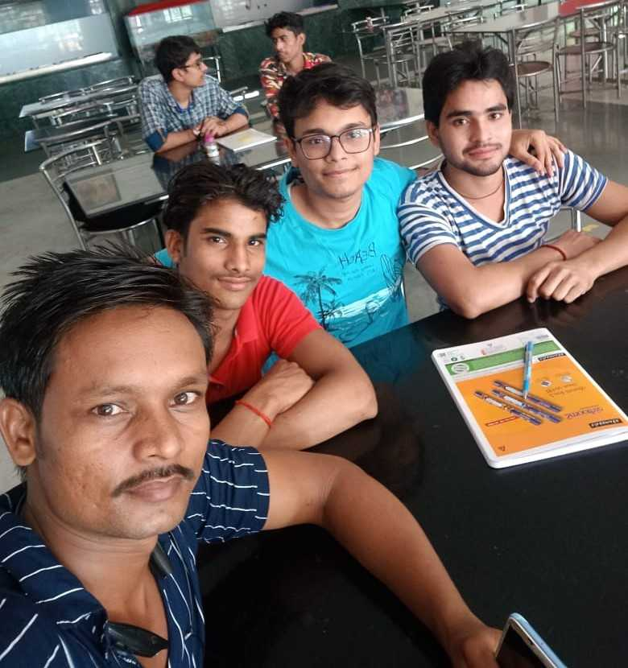
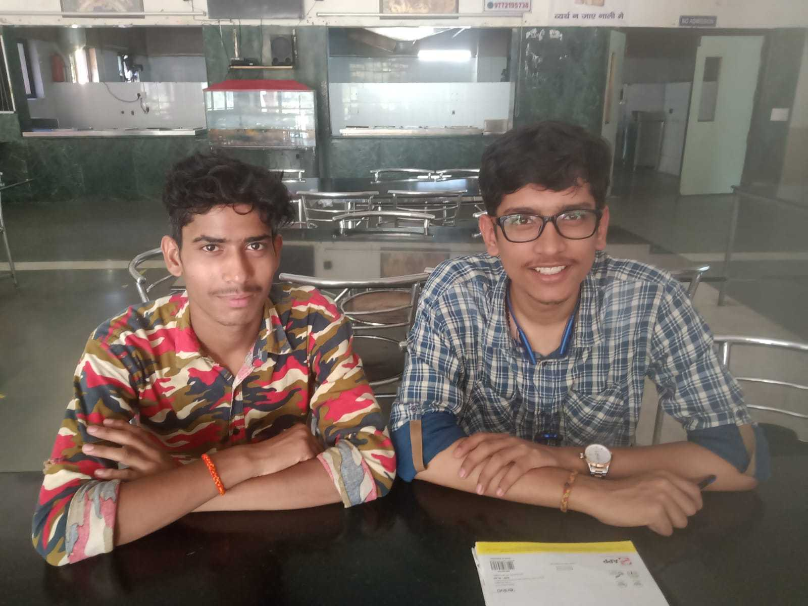
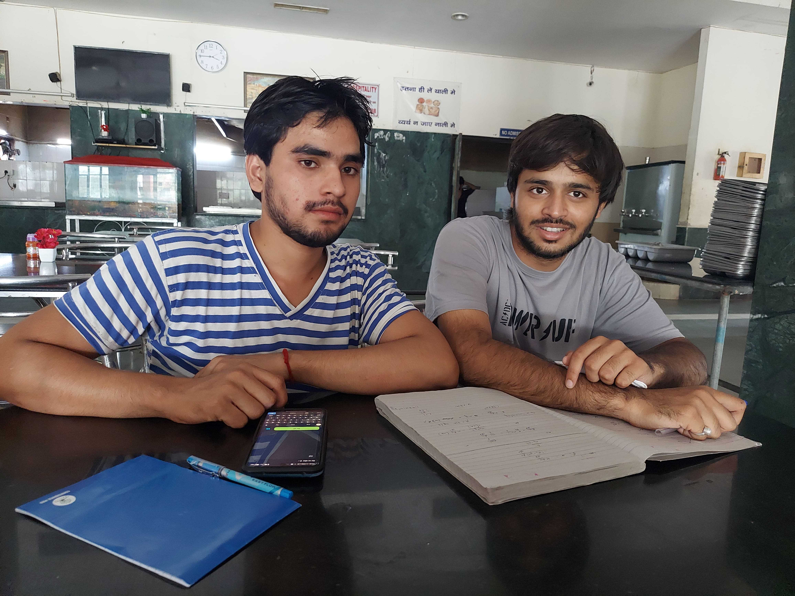
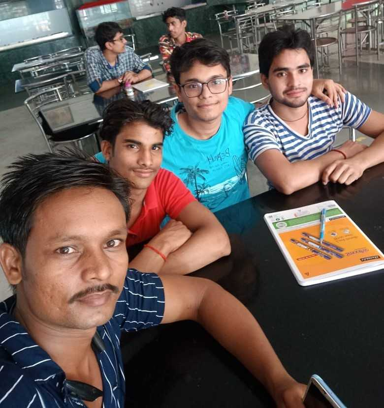
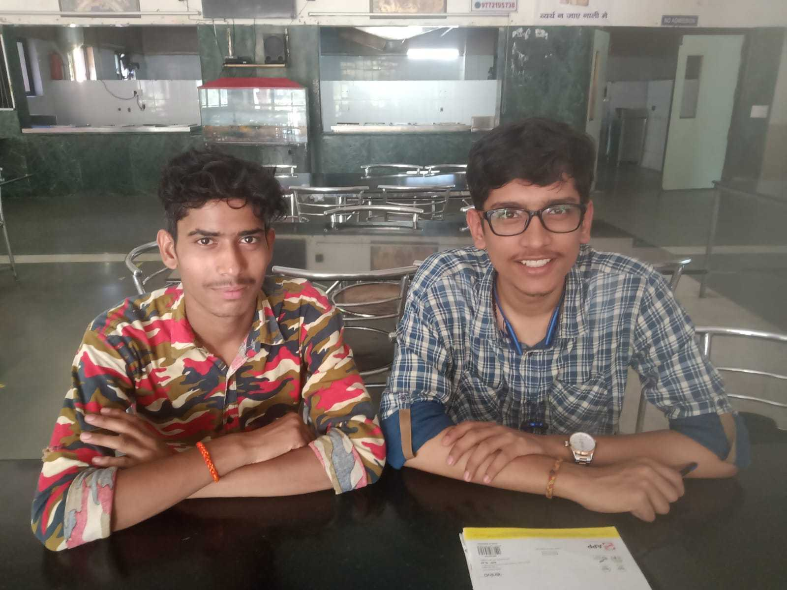

SANKALP
EVENTS
FIND US
SANKALP IS ❤️
ABOUT EVENTS
Sankalp is a closely knit club that conducts various cultural events with great fervor. From organizing Saraswati Puja to decorating the Hanuman temple, they leave no stone unturned to make everything extraordinary. Not only that, but they also extend their hands of love to the village children and mess workers by imparting knowledge and skills. Sankalp is not just a club, but a family that celebrates every occasion with utmost joy and enthusiasm.
Sankalp not only conducts cultural events but also contributes to the community through initiatives like the Village Project and the Mess Workers Empowerment Program (MWEP), which aim to uplift rural communities by providing education, healthcare, and infrastructure development.
Know More◉ Click the Events to Explore!


Janmashtami
We are sankalp club of Lnmiit the ocassion of the birthday of lord Krishna we celebrate the janmastami.we decorate the college and conduct "dahi handi " compitition.
As the Sankalp Club of Lnmiit, we celebrate Janmashtami to mark the birthday of Lord Krishna. We take several initiatives to make the occasion memorable and joyous. One of the main activities we undertake is decorating the college with vibrant rangolis, colourful lights, and fragrant flowers to create a festive atmosphere. We also encourage everyone to dress up in traditional attire and participate in cultural programs such as singing bhajans and performing skits. We conduct a 'dahi handi' competition, where teams compete to break a pot filled with curd that is suspended at a considerable height. This event brings out the competitive spirit and teamwork among the participants. Additionally, we organize a 'rasleela' performance, depicting the life of Lord Krishna, to showcase the cultural significance of the occasion. We also distribute prasad, sweets, and food to the underprivileged, promoting the values of charity and kindness. Overall, Janmashtami celebrations are an opportunity for us to come together, celebrate, and imbibe the teachings of Lord Krishna in our lives.


Sahyog
Sahyog is an event that aims to promote social inclusiveness and provide a platform for children from different NGOs to come together and participate in cultural and fun activities.
Sahyog is an event that aims to promote social inclusiveness and provide a platform for children from different NGOs to come together and participate in cultural and fun activities. During Sahyog, we invite children from various NGOs to participate in activities that encourage teamwork, creativity, and cultural exchange. We organize a range of activities such as games, sports, music, dance, and art, to promote holistic development and foster a sense of belonging among the children. We also provide the children with sweets, snacks, and other refreshments as a token of appreciation for their participation. Moreover, we distribute educational and hygiene kits to the children to promote education and health awareness. Sahyog is a celebration of diversity and a platform for children to learn from one another and embrace different cultures. It is an opportunity to create lasting memories and friendships that transcend social and economic barriers. Our commitment to Sahyog is a testament to our belief in the power of collective action to bring about positive social change. We will continue to work towards creating a society that is inclusive and provides equal opportunities for all.
Saraswati Puja
Sankalp's dedication to cultural inclusivity shines brightly during its annual Saraswati Puja celebration. This revered event pays homage to knowledge, wisdom, and artistry through the veneration of Goddess Saraswati.
Sankalp's dedication to cultural inclusivity shines brightly during its annual Saraswati Puja celebration. This revered event pays homage to knowledge, wisdom, and artistry through the veneration of Goddess Saraswati. The festivities encompass traditional rituals, invocations, and artistic presentations that evoke the essence of learning and creativity. The event attracts students, teachers, and community members who come together to seek blessings for academic pursuits and creative endeavors. Club Sankalp's Saraswati Puja celebration is more than a religious observance; it's a homage to the intellectual and artistic endeavors that enrich our lives. The event not only strengthens the connection to our cultural heritage but also underscores the importance of education and the arts in shaping a holistic society. Both the Holi and Saraswati Puja celebrations organized by Club Sankalp exemplify their commitment to unity, cultural understanding, and the holistic well-being of the community. These events transcend their immediate festivities, fostering an environment where diversity is celebrated and individuals are uplifted through shared experiences and mutual respect. Through their vibrant celebrations, Club Sankalp weaves a tapestry of togetherness, enriching the fabric of the community with colors of harmony, knowledge, and compassion.
Holi
Sankalp, known for its vibrant and inclusive approach, annually orchestrates a Holi celebration that transcends cultural and generational boundaries.
Sankalp's annual Holi celebration is a kaleidoscope of cultural harmony and exuberant joy. Beyond the vibrant splashes of color that paint the atmosphere, this event symbolizes the spirit of unity that transcends differences. Held with fervor and enthusiasm, the celebration brings together students, faculty, and the wider community in a tapestry of colors, music, and laughter. Participants, irrespective of their backgrounds, immerse themselves in the jubilant revelry, fostering friendships that transcend cultural divides. The significance of this event goes beyond the surface. It serves as a cultural bridge, providing an opportunity for individuals to learn and appreciate each other's traditions. Through lively interactions, participants embrace the richness of diversity and cultivate a sense of belonging. The vibrant energy of the event mirrors the diverse tapestry of our society, reminding everyone that unity and togetherness are the true essence of celebrations.
Village Project
Every weekend, we visited a village to teach and empower the locals. Through our efforts, we aimed to improve their education and promote self-sufficiency, thereby creating a positive impact in their lives.
As part of our village project, we visit the nearby village of Rupa Ki Nangal to teach children every Saturday and Sunday. This project aims to provide education and improve the overall quality of life for the children in the village. We teach a range of subjects such as mathematics, science, and language, along with life skills such as hygiene, nutrition, and communication. Our team of volunteers works closely with the children to identify their learning needs and provide individual attention to those who need it. Apart from academics, we also conduct various extracurricular activities like games, art, and music to encourage holistic development. We believe in creating a friendly and nurturing environment for the children to foster their curiosity and creativity. This project has helped us build strong ties with the local community, and we have witnessed a positive impact on the children's academic performance and social skills. We are committed to continuing our efforts to improve the lives of these children and empower them to reach their full potential.
Cloth Distribution
Our clothing donation drive wasn't just about giving away clothes; it was about building connections, spreading compassion, and advocating for the well-being of all community members.
Guided by our collective commitment to social betterment, our club embarked on a meaningful clothing donation campaign within a nearby slum. This initiative was a testament to our belief in lending a helping hand to those in need and fostering a sense of unity within the community. As we engaged in the clothing distribution, we were humbled by the smiles and expressions of gratitude that radiated from the recipients. The experience reinforced the significance of our actions and motivated us to continue making a positive impact. Our visit to the slum illuminated the importance of being active participants in creating a more equitable society. This endeavor exemplified the power of collective effort. Each member of our club contributed their time and resources, collectively making a substantial difference. Our collaborative approach echoed the essence of community and the potential for positive change when individuals come together with a shared purpose. Our clothing donation drive wasn't just about giving away clothes; it was about building connections, spreading compassion, and advocating for the well-being of all community members. This initiative stands as a reminder that even small acts of kindness can have a profound ripple effect, igniting a spirit of solidarity that resonates far beyond the immediate moment.
 





MWEP
MWEP (Mess Workers Education Program) is an initiative aimed at providing education and skill development opportunities to mess workers in educational institutions. This program is designed to empower mess workers, who are an integral part of the campus community but often marginalized and overlooked.
MWEP (Mess Workers Education Program) is an initiative aimed at providing education and skill development opportunities to mess workers in educational institutions. This program is designed to empower mess workers, who are an integral part of the campus community but often marginalized and overlooked. Through MWEP, we conduct regular training sessions to improve the mess workers' culinary skills, hygiene practices, and food safety measures. We also offer basic literacy and numeracy classes to enable them to read and write and perform basic calculations. Moreover, we organize various health and wellness activities, such as yoga and meditation sessions, to improve the mess workers' physical and mental well-being. Our goal is to create a supportive environment for the mess workers, where they can learn and grow professionally and personally. MWEP has been successful in improving the mess workers' quality of life and helping them gain recognition and respect for their work. We are committed to continuing our efforts to promote education and empowerment among mess workers and other marginalized communities

Make A Meal
Every 15th of August, our club organizes a heartfelt event that extends gratitude and recognition to the unsung heroes of our campus - the mess workers.
Every 15th of August, our club organizes a heartfelt event that extends gratitude and recognition to the unsung heroes of our campus - the mess workers. The "Make a Meal" initiative is a testament to our commitment to fostering a sense of community and appreciation for those who work tirelessly behind the scenes. On this special day, our members actively participate in the preparation of meals alongside the mess workers. This collaborative effort not only provides us with an opportunity to learn more about their daily tasks but also underscores the value of their work. As we work side by side, we share stories and build connections that transcend roles and positions. The culmination of the event is a heartfelt meal service. With dedication and smiles, we serve the food we've collectively prepared to the mess workers. This gesture of service aims to provide them with a moment of respite from their regular routine and to show our genuine appreciation for their hard work. To add a touch of celebration, we decorate the mess area in vibrant colors, creating an atmosphere of festivity. As the meal concludes, we present them with sweets and gifts as tokens of our esteem. These small yet meaningful gestures symbolize our gratitude for their daily contributions.
Sankalp : An Overview
Sankalp is a social and spiritual club at LNMIIT that believes in giving back to society. We are a family of like-minded individuals who share a passion for helping the less fortunate. Our club hosts a range of events that aim to bring a positive change to the world around us. One of our most popular events is the village project. We visit the nearby village and teach the children new skills and help them with their studies. Another important event is the MWEP, which stands for Medical and Wellness Program. Through this program, we work towards improving the health and well-being of the people in our community. We conduct regular medical camps and awareness programs to promote healthy living. We also organize several pujas throughout the year, such as Saraswati Puja. Our members come together to decorate the campus and make the event a grand success. Our cultural fest is another event that we look forward to every year. We invite children from nearby villages to join us for a day of fun and festivities. We provide them with sweets and other treats, and we all have a great time together. Finally, we also visit slums in the nearby areas to provide food and other necessities to the people living there. We believe that small acts of kindness can make a big difference in someone's life. Overall, Sankalp is more than just a club. It is a community of individuals who are committed to making the world a better place.